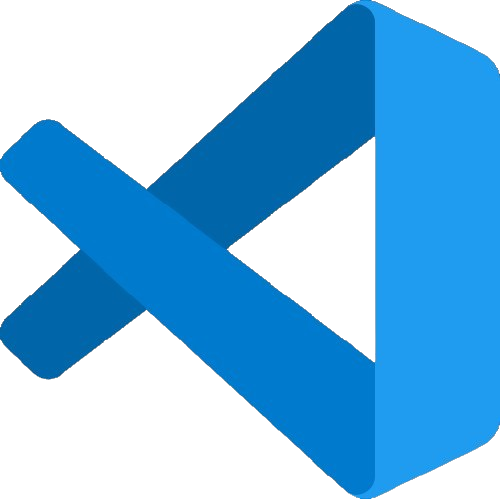
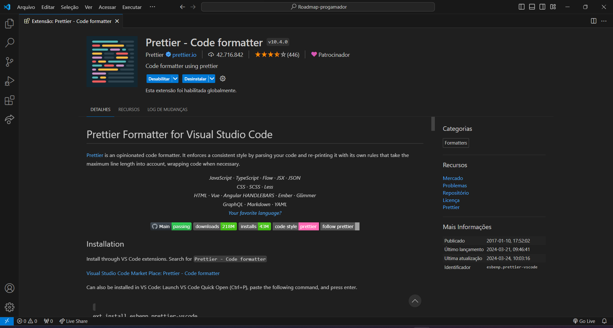
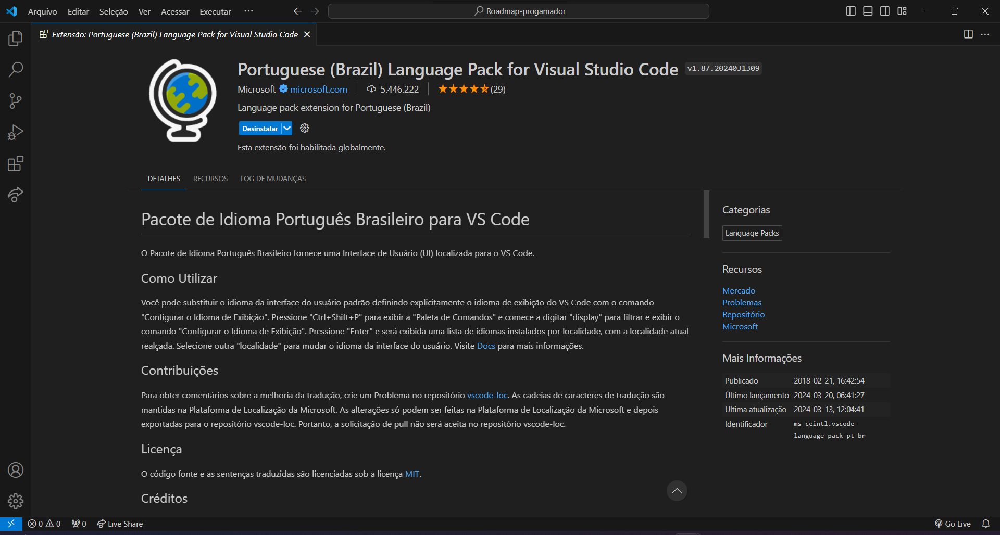

Roadmap básico para progamadores
Porque todos devem aprender progamação?
Front-End
O que vou aprender?
- HTML: Cria a estrutura de um site ou aplicativo.
- CSS:Dá estilo a um site ou aplicativo.
- JavaScript: Quando se estuda o básico de dele, você aprenderá os conceitos fundamentais da linguagem, como variáveis, estruturas de controle, funções, bem como aplicá-los para interagir com elementos de uma página web e manipular dados simples.
Back-End
O que vou aprender?
- PHP: é uma linguagem de script de servidor, fácil de aprender e usar. É uma linguagem de propósito geral, mas é mais comumente usada para desenvolvimento web.
- PYTHON: é uma linguagem de programação de propósito geral, que pode ser usada para uma ampla gama de tarefas, incluindo desenvolvimento web, ciência de dados e inteligência artificial.
Sugestões
Para aqueles que estão começando sua jornada de programação, aqui estão algumas sugestões e ferramentas úteis para tornar o processo mais suave e eficiente:
IDE Visual Studio Code: Uma excelente opção para iniciantes, o Visual Studio Code é uma IDE leve, poderosa e altamente personalizável, adequada para uma variedade de linguagens de programação.
Agora, vamos às extensões que podem melhorar ainda mais sua experiência de desenvolvimento:
Live Server: Uma extensão que permite visualizar instantaneamente as alterações feitas em seu código HTML, CSS e JavaScript em um navegador da web. Isso é útil para desenvolvimento web, pois elimina a necessidade de atualizar manualmente o navegador a cada alteração.
Adicione essa extensão Aqui.
Prettier: Uma ferramenta que ajuda a manter o código formatado de forma consistente, aplicando automaticamente regras de formatação ao seu código. Prettier suporta várias linguagens de programação e pode ser personalizado de acordo com as preferências do usuário.
Adicione essa extensão Aqui.
Portuguese: Uma extensão que adiciona suporte para a língua portuguesa no Visual Studio Code, incluindo correção ortográfica e sugestões de palavras durante a digitação.
Adicione essa extensão Aqui.
Fast Arrow: Uma extensão que fornece atalhos de teclado para navegar rapidamente entre os arquivos do projeto no Visual Studio Code. Isso pode melhorar a eficiência durante o desenvolvimento, especialmente em projetos grandes com muitos arquivos.
Adicione essa extensão Aqui.
VS Code Icons: Uma extensão que adiciona ícones coloridos aos arquivos e pastas no Explorer do Visual Studio Code, facilitando a identificação rápida do tipo de arquivo.
Adicione essa extensão Aqui.